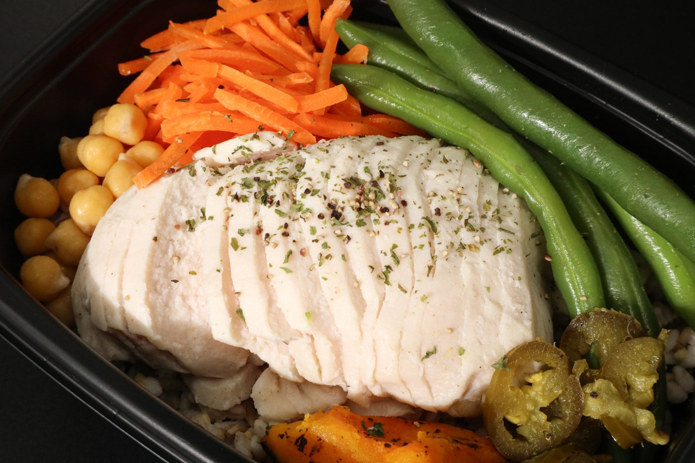
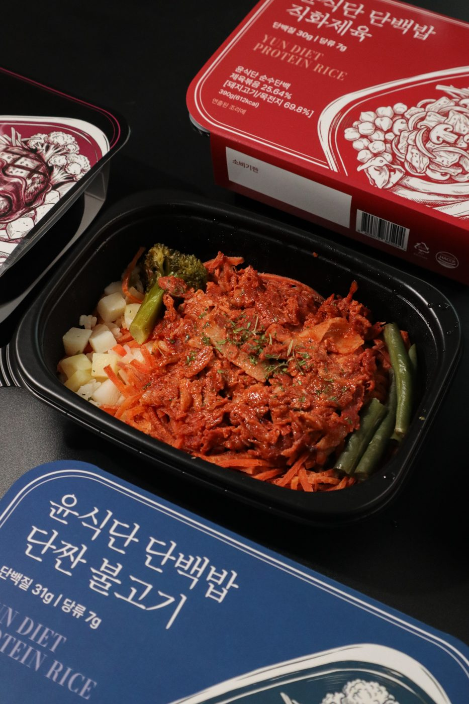
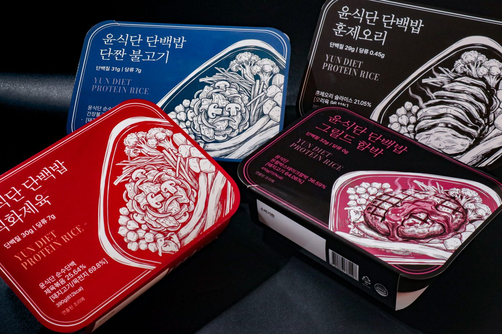

01 · 고객의 지금PNG 저장

다시
DANBAEKBAP
연휴 끝, 옷이 답답하게 느껴진다면
급하게
굶지
마세요.
명절 뒤 필요한 건
벌칙 같은 식단이 아니라
다시 시작할 한 끼.
첫 3초 훅. ‘급찐급빠’의 초조함은 인정하고 과도한 절식은 권하지 않습니다.
광고 상세페이지 상단에 추가할 이미지 3장씩, 총 4가지 방향입니다. 각 시안은 문제 공감 → 식단 복귀 제안 → 단백밥 선택으로 이어지며, 첫 장부터 화면의 설득 방식이 다릅니다. 마음에 드는 문구와 고칠 부분을 이미지 아래에 남겨주세요.
광고를 누른 고객의 ‘급하게 빼야 하나?’라는 마음을 먼저 잡습니다. 급한 절식 대신 다음 한 끼를 고르는 쪽으로 전환합니다.
연휴 끝, 옷이 답답하게 느껴진다면
급하게
굶지
마세요.
명절 뒤 필요한 건
벌칙 같은 식단이 아니라
다시 시작할 한 끼.
첫 3초 훅. ‘급찐급빠’의 초조함은 인정하고 과도한 절식은 권하지 않습니다.

내일 점심부터
평소의 식사로.
무리한 복구 계획 대신 구매 후 바로 떠올릴 수 있는 한 끼 행동을 제안합니다.

식단은
맛있는 밥에서
이어집니다.
명절 다음 식사, 단백밥으로 고르세요.
실물 식사 사진으로 연결. 과장된 체중 변화 약속 없이 상품 선택으로 끝냅니다.
연휴 뒤 ‘어디서부터 시작하지?’라는 질문에 답합니다. 식사 하나를 먼저 정해 식단 복귀를 쉽게 느끼게 합니다.

다시 시작할
식사가 필요할 때.
복잡한 계획보다 먼저,
내일 먹을 한 끼를 정해두세요.
‘이번 주 전체 식단’의 부담을 ‘내일 한 끼’로 줄이는 실천형 훅입니다.
큰 결심 말고
먹을 한 끼부터.
예시 일정입니다. 개인의 생활 패턴에 맞게 선택하세요.
지나친 ‘하루 만에 빼기’보다 일상으로 돌아오는 흐름을 보여줍니다.
다음 식사를
단백밥으로.
밥·단백질 반찬·채소가 있는 한 끼.
내일의 첫 선택을
가볍게 시작하세요 →
실제 상품 구성 사진과 함께 랜딩의 구매 옵션으로 연결되는 마무리입니다.
명절 과식 뒤 흔히 떠올리는 ‘굶어서 만회하기’와 실제로 지속할 수 있는 한 끼 선택을 대비합니다. 강한 대비와 짧은 문장으로 스크롤을 잡습니다.
고객 머릿속 질문을 대화체로 드러내는 시선 정지용 첫 이미지입니다.
만회보다
다음 선택.
한 번의 과식을
한 번의 벌로 갚지 않기
평소처럼 먹을
식사를 미리 정하기
식단을 다시 시작하는 방법은
거창할 필요가 없으니까.
제품을 아직 드러내지 않고, 고객이 받아들일 수 있는 행동의 기준을 만듭니다.
내일의 한 끼,
단백밥으로.
맛을 포기하지 않는
식단 복귀의 시작.
비교에서 제시한 ‘한 끼 고르기’를 단백밥으로 연결합니다.
몸에 대한 불안이나 죄책감을 자극하지 않고, 명절 다음 날도 자연스러운 식사를 할 수 있다는 마음을 전합니다. 차분한 브랜드 인상에 맞춘 안입니다.
많이 먹은
날도 있었죠.
괜찮아요. 다음 식사부터
다시 고르면 되니까요.
명절 음식 자체를 문제 삼지 않고 ‘다음 식사’에 집중합니다.
브랜드의 생활식 관점을 한 문장으로 기억시키는 중심 이미지입니다.
다음 한 끼는
단백밥.
고민되는 날에도, 먹고 싶은 메뉴로 고르세요.
여러 실제 메뉴가 담긴 패키지 사진으로 선택의 폭을 보여줍니다.